Herick Tiburski
Computer Engineering - 2/10
Researcher at IoTec Lab
Age: 18 years old


Computer Engineering - 2/10
Researcher at IoTec Lab
Age: 18 years old
Development of a wearable assistive device in glasses format using ESP32-C3 and ultrasonic sensors (HC-SR04) to detect obstacles and simulate auditory spatial perception through sound frequency variation and directional emitters. The system includes Wi-Fi configuration interface and achieved 90% accuracy in laboratory tests.
Authors: Herick Betin Tiburski, Michael Douglas Cabral Alves, Maurício de CamposDevelopment of “SolarSim”, a modular simulator for electric vehicle charging integrated with photovoltaic systems. Built in Python using Tkinter, Matplotlib and ReportLab, with real meteorological API integration and dynamic energy generation analysis.
Authors: Herick Betin Tiburski, Jordan Passinato Sausen